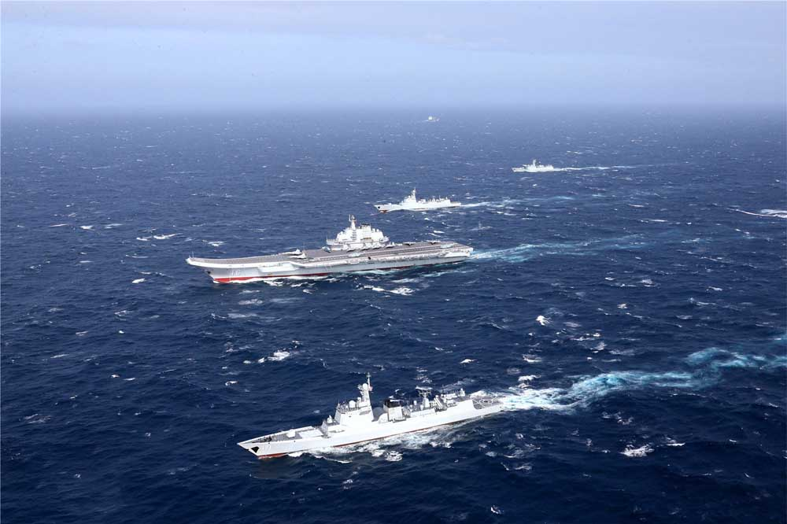
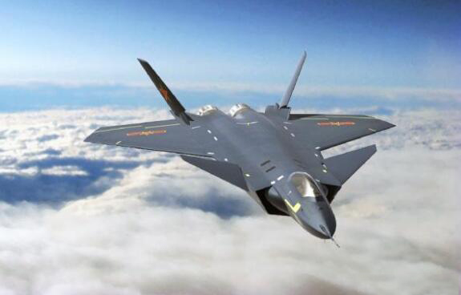
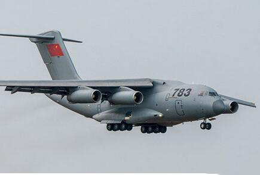
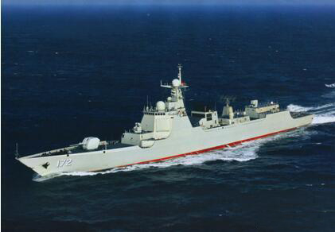
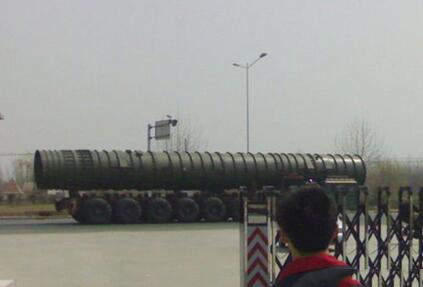

MENU
信息科技
经济全球化的深入发展，以信息技术为代表的科技革命不断取得突破，信息化已经成为各国经济社会发展的强大动力。以信息技术革命为基础的第三次浪潮几乎没有遭遇到地域的限制，这是一次全球性的浪潮。
1
2
辽宁号航空母舰
辽宁号的服役使中国拥有了第一艘真正意义上的航母，实现了百年航母之梦。航母战斗群是取得区域性乃至全球性的海上军事优势不可或缺的一环。大家都经常听到一个词语——“蓝水海军”，指的就是在远离海岸线的深海和大洋执行战斗或者非战斗任务的海军。中国海军之前一直都是“近海防御为主”，远洋能力薄弱，而航母就被很多人视为“蓝水海军”敲门砖。一般认为要想打造一支需要2到3支航母战斗群。而辽宁号航空母舰就是中国走向“蓝水海军”的重要标志。
歼-20隐形战机
歼-20隐形战机的服役把中国远离领土的打击能力提升了一个档次，而且将意味着中国航空技术已经发展到有能力自主研发高端航空武器的时代，并且在发展高端隐身飞机的国家行列中，中国已经拥有了发言权，这种战略性装备的发展对中国航空工业水平的提升有着重要的标志性意义。拥有歼-20后，中国空军在应对周边非隐身飞机对中国所构成的威胁上，便有了跨代的优势，对维护我国的空天安全和应对周边复杂的安全形势有了更好的保障。
运-20战略运输舰
运-20的官方研发代号是“鲲鹏”，取自中国神话中的一种神鸟，超大型的外观让其得到了“胖姑娘”的绰号，这款机型让中国成为继俄罗斯和美国之后第三个有能力研发国产重型军用运输机的国家。运20的重要性完全不亚于第四代战斗机歼20。终于我们的航空人不负众望，为我们带来了比肩世界先进水平的大型运输机运20。大型军用运输机是21世纪军事强国的名片，也是衡量一国是否具备战略空运能力的重要标志。因此，各军事大国都十分重视大型运输机的发展。
052D中华神盾驱逐舰
长期以来，中国海军战舰一直被外界视为“一次性反舰导弹发射平台”。进入21世纪后，中国虽然建造了一批综合性能较好的大中型战舰来替代老旧舰船，但由于技术上的限制，中国水面舰艇对岸打击能力依旧趋近于零。然而，052D的服役，填补了中国海军在打击能力上的最大空白，其所搭载的攻陆巡航导弹可令中国海军的威慑力大增。
东风41洲际弹道导弹
因中国在尖端国防科技领域的突飞猛进，使得因美俄国力差距而被破坏的核平衡出现了被恢复的苗头。相对与美俄两国，作为核小国的中国不可能依靠数量庞大的核武器抵御来自敌方的第一次核打击。因此，只能以“我们也应该有几件核武器”的方式来维持“简单核平衡”。正是在这一背景之下中国先后推出了“东风”-5、“东风”-31系列洲际弹道导弹以备在战时实行第二次核打击。进入新世纪之后，随着国力的逐步增强，中国的核武库在数量和质量上都有了长足的发展。
NEWs
-
国防领域
2017年5月5日，中国首架具有自主知识产权的大型喷气式干线民用飞机C919的首飞完满结束。这标志着大型民用客机的垄断市场在A(Airbus空中客车)和B(Boeing波音)之外，正式迎来了新的参与者C(C919)。 从C919设计研发到总装下线，进而实现首飞，就有36所高校、200多家企业、数十万产业人员参与研发，70家企业成为C919的供应商或潜在供应商，已初步组成一条完整的飞机制造产业链。 以产品促部件，最终实现产业链的跨越式发展已经成为中国制造一大“套路”。以近年赢得广泛声誉的中国高铁，就是通过消化吸收外国设计、自主采购非原厂零部件组装;再逐步扩大自主范围，在新一代自主研发车型上选用国产部件，建立起一条完善的高铁产业链的。 C919的诞生不是简单的组装飞机，而是配置属于自己的庞大民用航空工业体系。
-
信息领域
2017年5月18日，我国在南海北部海域的可燃冰试采成功。可燃冰作为一种储量惊人的清洁能源，其储量几乎可以达到煤、石油、天然气总和的两倍。是公认的下一代清洁替代能源。此次试采标志着我国成为全球实现了在海域可燃冰试开采中获得连续稳定产气第一名的国家。 继美国引领“页岩气革命”之后，我国引领的可燃冰开采革命，有望推动整个世界能源利用格局的改变! 可燃冰作为固态的天然气水合物，其能量效率极高，1立方米“可燃冰”就可以分解释放出160立方米以上的天然气! 据预测，我国可燃冰远景资源量超过1000亿吨当量，潜力巨大。可大批量替代石油煤炭等化石能源。
-
资源领域
2017年5月23日，中国卫星导航系统管理办公室宣布，我国将全面启动北斗系统第三步建设，即北斗三号系统，2017年下半年发射6~8颗全球组网卫星。 正式标志着北斗系统第三阶段任务:全球组网正式开始。接下来的2018年将前后发射18颗北斗卫星。北斗卫星系统将率先为“一带一路”沿线国家提供基本服务，直到2020年我国建成世界一流的全球卫星导航系统，最终形成全球服务能力。 而在智能手机领域，主流机型中均已支持北斗卫星导航系统，部分国外品牌手机已具备北斗卫星导航的功能。 据统计，2016年国内导航定位终端产品总销量突破5.3亿台。其中，具有卫星导航定位功能的智能手机销售量达到5.1亿台，带北斗功能的数量超过30%。 北斗系统在共享单车、城市智慧管线等新兴市场规模化应用逐渐显现。虽然目前规模较小，但已经显示出巨大的生命力。
-
生活领域
2017年8月10日，全球首颗量子科学实验卫星“墨子号”圆满完成了三大科学实验任务:量子纠缠分发、量子密钥分发、量子隐形传态。使得我国在量子通讯领域达到新高度。 作为安全等级最高的加密技术，量子加密早已成为各大国争相追逐的目标。早在10年前，IBM、微软等知名外企就率先开展研发，国内仅用于个别科学实验。谁能想到呢，只用了10年，中国在这个领域已经变成了当之无愧的领头羊。 量子通信涉及的现象远远超出了我们对于宇宙的传统理解，爱因斯坦称它为“幽灵般”的现象。因为它假定现存的粒子可以瞬间将信息“传输”到另一个纠缠的粒子，并且这种纠缠似乎是超越时空的。无论在哪里，另一个纠缠的粒子都会产生感应。如果你的加密措施使用了量子通信，那基本意味着永远无法被对手破解。 使用了量子通信，对手对我的信息始终处于一脸懵逼的状态:要么他根本不知道我在说什么;要么他窃听到的有关于我的任何信息，都是错的。拥有无法破解的通讯加密技术，其经济价值和现实意义不言而喻。墨子号在这条路上的探索正在引领潮流。